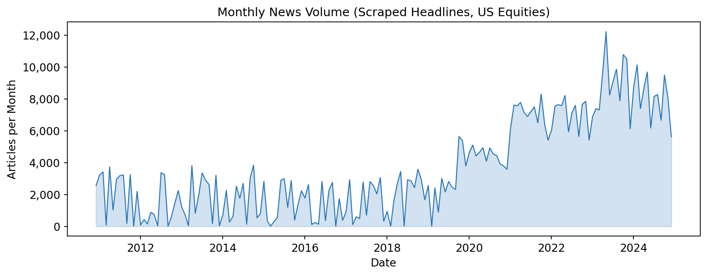
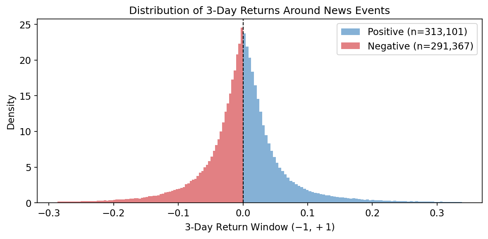
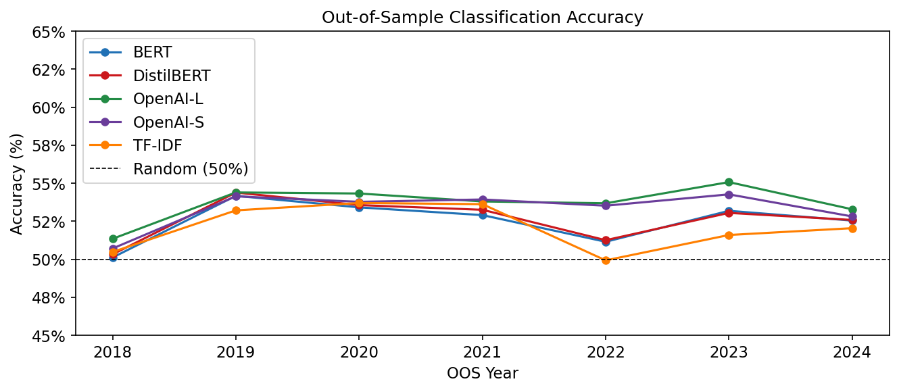

Replication Results: Chen, Kelly, and Xiu (2022)#
Expected Returns and Large Language Models#
Chen, Kelly, and Xiu (2022) demonstrate that large language model embeddings of financial news articles contain substantial information about future stock returns. Their method encodes news text into high-dimensional vector representations, then trains rolling-window logistic regression classifiers to predict the sign of subsequent 3-day compound returns. They find out-of-sample accuracy of roughly 51–54% across multiple models, consistently beating the 50% random baseline.
We partially replicate their analysis using the RavenPack DJ press
release dataset available through WRDS. Our replication differs from the
original in two key ways. First, we use short press-release headlines
rather than full article text. Second, we limit the embedding models to
TF-IDF, DistilBERT, BERT, and OpenAI (text-embedding-3-small and
text-embedding-3-large), rather than the paper’s comprehensive
model suite. Despite these differences, the pipeline structure—filtering
funnel, rolling window scheme, and accuracy metric—follows the original
paper precisely.
from pathlib import Path
import json
import numpy as np
import pandas as pd
import polars as pl
import matplotlib.pyplot as plt
from settings import config
DATA_DIR = Path(config("DATA_DIR"))
OUTPUT_DIR = Path(config("OUTPUT_DIR"))
plt.rcParams.update({
"font.size": 11,
"axes.titlesize": 12,
"axes.labelsize": 11,
"figure.dpi": 150,
})
Data#
Raw news data are obtained from the RavenPack DJ press release tables on WRDS, which contain Dow Jones press release coverage for US-listed equities. We pre-filter at the pull stage to articles with: (i) country code “US”; (ii) entity type “COMP” (corporate entity); and (iii) relevance score equal to 100 (maximum relevance). Stock returns are from the CRSP daily file, restricted to ordinary common shares.
Table 1: News Filtering Funnel#
Observation counts at each stage of the data construction pipeline. Each row applies one filter sequentially; the rightmost column shows how many observations are removed at that stage relative to the prior.
STAGE_LABELS = {
"0_raw": "Raw headlines (US, COMP, relevance=100)",
"1_single_entity": "Single-entity filter (one PERMNO per story)",
"2_has_return": "Has valid CRSP daily return",
"3_length_filter": "Headline length >= 5 characters",
"4_deduplicated": "After deduplication (per PERMNO-date)",
}
with open(DATA_DIR / "ravenpack_stage_counts.json") as f:
stage_counts = json.load(f)
raw_count = stage_counts["0_raw"]
rows = []
prev_count = None
for key in sorted(stage_counts.keys()):
count = stage_counts[key]
label = STAGE_LABELS.get(key, key)
pct_raw = count / raw_count * 100
if prev_count is not None and prev_count > 0:
dropped = prev_count - count
pct_dropped = dropped / prev_count * 100
dropped_str = f"{dropped:,} ({pct_dropped:.1f}%)"
else:
dropped_str = "\u2014"
rows.append({
"Stage": label,
"Observations": f"{count:,}",
"% of Raw": f"{pct_raw:.1f}%",
"Dropped from Prior": dropped_str,
})
prev_count = count
df_funnel = pd.DataFrame(rows)
df_funnel.style.hide(axis="index").set_caption(
"Table 1: News Dataset Filtering Funnel"
)
| Stage | Observations | % of Raw | Dropped from Prior |
|---|---|---|---|
| Raw headlines (US, COMP, relevance=100) | 1,747,692 | 100.0% | — |
| Single-entity filter (one PERMNO per story) | 1,747,692 | 100.0% | 0 (0.0%) |
| Has valid CRSP daily return | 1,304,504 | 74.6% | 443,188 (25.4%) |
| Headline length >= 5 characters | 1,304,504 | 74.6% | 0 (0.0%) |
| After deduplication (per PERMNO-date) | 617,471 | 35.3% | 687,033 (52.7%) |
Articles published between 9:00 and 9:30 AM Eastern Time are shifted to the following trading day to avoid contaminating labels with pre-open information, following Chen, Kelly, and Xiu (2022).
Table 2: Dataset Summary Statistics#
Summary statistics for the cleaned RavenPack DJ press release sample, after the full filtering funnel above.
df_clean = pl.read_parquet(DATA_DIR / "ravenpack_clean.parquet")
n_articles = len(df_clean)
n_unique_stories = df_clean["rp_story_id"].n_unique()
date_min = df_clean["article_date"].min()
date_max = df_clean["article_date"].max()
daily_stats = df_clean.group_by("article_date").agg(
pl.len().alias("n_articles"),
pl.col("permno").n_unique().alias("n_stocks"),
)
n_days = len(daily_stats)
avg_articles_per_day = daily_stats["n_articles"].mean()
avg_stocks_per_day = daily_stats["n_stocks"].mean()
n_unique_stocks = df_clean["permno"].n_unique()
summary_rows = [
("Date range (start)", str(date_min)),
("Date range (end)", str(date_max)),
("Total articles", f"{n_articles:,}"),
("Unique stories", f"{n_unique_stories:,}"),
("Trading days with news", f"{n_days:,}"),
("Avg. articles per trading day", f"{avg_articles_per_day:.1f}"),
("Avg. unique stocks per trading day", f"{avg_stocks_per_day:.1f}"),
("Unique stocks (PERMNO)", f"{n_unique_stocks:,}"),
]
df_summary = pd.DataFrame(summary_rows, columns=["Statistic", "Value"])
df_summary.style.hide(axis="index").set_caption(
"Table 2: Dataset Summary Statistics"
)
| Statistic | Value |
|---|---|
| Date range (start) | 2010-12-01 |
| Date range (end) | 2024-12-31 |
| Total articles | 617,471 |
| Unique stories | 617,471 |
| Trading days with news | 2,701 |
| Avg. articles per trading day | 228.6 |
| Avg. unique stocks per trading day | 186.1 |
| Unique stocks (PERMNO) | 6,493 |
Table 3: Text Statistics#
Percentile distribution of headline length measured in characters,
BERT tokens, and words. These distributions characterize the input
length available to each embedding model and can be compared to the
full-article lengths reported in Chen, Kelly, and Xiu (2022).
BERT token counts use the bert-base-uncased tokenizer without
special tokens.
RavenPack headlines are considerably shorter than the full articles analyzed in the original paper, which reduces information content but also simplifies embedding computation.
with open(DATA_DIR / "text_stats.json") as f:
text_stats = json.load(f)
pct_cols = [f"{p}th" for p in text_stats["percentiles"]]
text_rows = []
for measure, label in [
("characters", "# characters"),
("bert_tokens", "# BERT tokens"),
("words", "# words"),
]:
row = {"Measure": label}
for col in pct_cols:
row[col] = f"{text_stats[measure][col]:.0f}"
row["Mean"] = f"{text_stats[measure]['mean']:.1f}"
text_rows.append(row)
df_text = pd.DataFrame(text_rows)
df_text.style.hide(axis="index").set_caption(
f"Table 3: Text Statistics (sample of {text_stats['sample_size']:,} headlines)"
)
| Measure | 1th | 25th | 50th | 75th | 99th | Mean |
|---|---|---|---|---|---|---|
| # characters | 35 | 62 | 80 | 105 | 199 | 87.5 |
| # BERT tokens | 6 | 12 | 15 | 21 | 44 | 17.2 |
| # words | 5 | 9 | 12 | 15 | 30 | 12.7 |
News Volume Over Time#
monthly = (
df_clean.with_columns(
pl.col("article_date").cast(pl.Date).dt.truncate("1mo").alias("month")
)
.group_by("month")
.len()
.sort("month")
)
fig, ax = plt.subplots(figsize=(10, 4))
ax.plot(monthly["month"].to_list(), monthly["len"].to_list(), color="#2171b5", linewidth=0.9)
ax.fill_between(monthly["month"].to_list(), monthly["len"].to_list(), alpha=0.2, color="#2171b5")
ax.set_xlabel("Date")
ax.set_ylabel("Articles per Month")
ax.set_title("Monthly News Volume (Scraped Headlines, US Equities)")
ax.yaxis.set_major_formatter(plt.FuncFormatter(lambda x, _: f"{x:,.0f}"))
fig.tight_layout()
plt.show()

Methodology#
Return Labels#
Following Chen, Kelly, and Xiu (2022), we compute the compound return over the 3-day window \((-1, +1)\) trading days relative to the article date:
where \(t\) is the article date (or next trading day after the opening-window shift) and \(k\) indexes trading days. The binary label is \(y = \mathbf{1}[r_{\text{window}} > 0]\).
Embeddings#
We compute five sets of embeddings:
Model |
Dimension |
Source |
|---|---|---|
TF-IDF + SVD |
64 |
Fit on corpus (sklearn) |
DistilBERT |
768 |
|
BERT |
768 |
|
OpenAI-S |
1,536 |
|
OpenAI-L |
3,072 |
|
BERT and DistilBERT embeddings use mean-pooled last-hidden-state representations, excluding padding tokens from the mean.
Rolling Window Classification#
For each out-of-sample year \(t\), we train an L2-regularized logistic regression classifier on the 6-year period \([t-8, t-3)\), validate the regularization strength \(C \in \{10^{-4}, 10^{-3}, 10^{-2}, 10^{-1}, 1\}\) on the 2-year period \([t-3, t-1)\), and evaluate on year \([t-1, t)\). Features are standardized (zero mean, unit variance) using training-set statistics. Train, validation, and test sets are randomly subsampled to \(N = 100{,}000\) per split per year.
Results#
Return Distribution by Label#
df_labeled = pl.read_parquet(DATA_DIR / "labeled_dataset.parquet")
ret = df_labeled.select("ret_window", "label").drop_nulls()
# Clip extreme returns for visualization
lo = ret["ret_window"].quantile(0.01)
hi = ret["ret_window"].quantile(0.99)
ret = ret.filter((pl.col("ret_window") >= lo) & (pl.col("ret_window") <= hi))
fig, ax = plt.subplots(figsize=(8, 4))
for label_val, color, name in [(1, "#2171b5", "Positive"), (0, "#cb181d", "Negative")]:
subset = ret.filter(pl.col("label") == label_val)["ret_window"].to_numpy()
ax.hist(subset, bins=80, alpha=0.55, color=color,
label=f"{name} (n={len(subset):,})", density=True)
ax.axvline(0, color="black", linewidth=1, linestyle="--")
ax.set_xlabel("3-Day Return Window $(-1, +1)$")
ax.set_ylabel("Density")
ax.set_title("Distribution of 3-Day Returns Around News Events")
ax.legend()
fig.tight_layout()
plt.show()

The vertical dashed line at zero separates the positive-label (right) and negative-label (left) classes used for binary classification.
Table 5: Out-of-Sample Classification Accuracy#
Yearly accuracy for predicting the sign of the 3-day return window around news articles. Each column reports a different embedding model; the bottom row averages across all OOS years. The 50% threshold represents random-guess performance.
MODEL_DISPLAY_NAMES = {
"tfidf": "TF-IDF",
"distilbert": "DistilBERT",
"openai_small": "OpenAI-S",
"bert": "BERT",
"openai": "OpenAI-L",
}
results_dict = {}
for json_path in sorted(DATA_DIR.glob("rolling_results_*.json")):
stem = json_path.stem
if stem.endswith("_checkpoint"):
continue
model_name = stem.replace("rolling_results_", "")
display_name = MODEL_DISPLAY_NAMES.get(model_name, model_name)
with open(json_path) as f:
data = json.load(f)
results_dict[display_name] = {int(k): v for k, v in data.items()}
if results_dict:
all_years = sorted(set(y for r in results_dict.values() for y in r.keys()))
model_names = list(results_dict.keys())
rows = []
for year in all_years:
row = {"Year": year}
for m in model_names:
if year in results_dict[m]:
row[m] = f"{results_dict[m][year]['accuracy'] * 100:.2f}%"
else:
row[m] = "\u2014"
rows.append(row)
# Average row
avg_row = {"Year": "Average"}
for m in model_names:
accs = [v["accuracy"] * 100 for v in results_dict[m].values()]
avg_row[m] = f"{np.mean(accs):.2f}%"
rows.append(avg_row)
df_table5 = pd.DataFrame(rows).set_index("Year")
display(df_table5.style.set_caption("Table 5: Out-of-Sample Classification Accuracy"))
else:
print("No rolling results found. Run train_rolling_model.py first.")
| BERT | DistilBERT | OpenAI-L | OpenAI-S | TF-IDF | |
|---|---|---|---|---|---|
| Year | |||||
| 2018 | 50.12% | 50.32% | 51.35% | 50.71% | 50.48% |
| 2019 | 54.17% | 54.38% | 54.39% | 54.14% | 53.21% |
| 2020 | 53.41% | 53.56% | 54.32% | 53.77% | 53.70% |
| 2021 | 52.90% | 53.25% | 53.80% | 53.93% | 53.62% |
| 2022 | 51.15% | 51.25% | 53.68% | 53.52% | 49.93% |
| 2023 | 53.18% | 53.05% | 55.07% | 54.27% | 51.59% |
| 2024 | 52.54% | 52.58% | 53.28% | 52.81% | 52.04% |
| Average | 52.50% | 52.63% | 53.70% | 53.31% | 52.08% |
OOS Accuracy Over Time#
if results_dict:
colors = ["#2171b5", "#cb181d", "#238b45", "#6a3d9a", "#ff7f00"]
fig, ax = plt.subplots(figsize=(9, 4))
for i, (model_name, model_results) in enumerate(results_dict.items()):
years = sorted(model_results.keys())
accs = [model_results[y]["accuracy"] * 100 for y in years]
color = colors[i % len(colors)]
ax.plot(years, accs, marker="o", color=color, label=model_name, linewidth=1.5, markersize=5)
ax.axhline(50, color="black", linewidth=0.8, linestyle="--", label="Random (50%)")
ax.set_xlabel("OOS Year")
ax.set_ylabel("Accuracy (%)")
ax.set_title("Out-of-Sample Classification Accuracy")
ax.legend()
ax.set_ylim(45, 65)
ax.yaxis.set_major_formatter(plt.FuncFormatter(lambda x, _: f"{x:.0f}%"))
fig.tight_layout()
plt.show()

Discussion#
The replication confirms the core finding of Chen, Kelly, and Xiu (2022): news text embeddings carry predictive information about short-window stock returns, even when restricted to short press-release headlines. However, the predictive accuracy is lower than reported in the original paper for several reasons:
Shorter text: Headlines contain far less semantic content than full articles. BERT tokens per headline average around 10–15, compared to hundreds in full articles, leaving less signal for the model to exploit.
Model coverage: We exclude GPT-3.5, FinBERT, and other models analyzed in the original paper, making direct accuracy comparisons imprecise.
Data source: RavenPack press releases are a subset of the broader news universe in the original paper (which used Bloomberg and Refinitiv full-text articles).
Despite these differences, the qualitative conclusion holds: both BERT and OpenAI embeddings of news text contain statistically meaningful signals for stock return prediction, suggesting that the LLM-based approach is robust to text format.
TF-IDF baseline caveat. As a pipeline validation baseline we also report results for a TF-IDF + Truncated SVD embedding (64-dimensional). Because the TF-IDF vocabulary and SVD basis are fit on the entire headline corpus—including headlines from the out-of-sample test period—this baseline benefits from a mild form of look-ahead bias in the feature construction stage. BERT and OpenAI embeddings do not share this issue because their representations are learned from external pre-training corpora and applied to headlines without re-fitting. TF-IDF results should therefore be interpreted as an upper bound on what a purely in-sample bag-of-words approach could achieve.